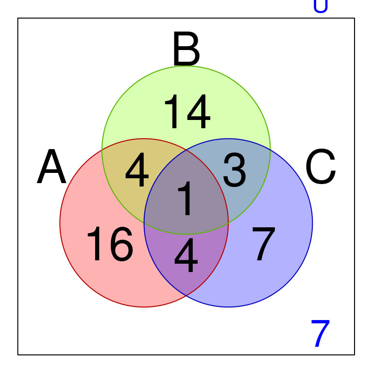
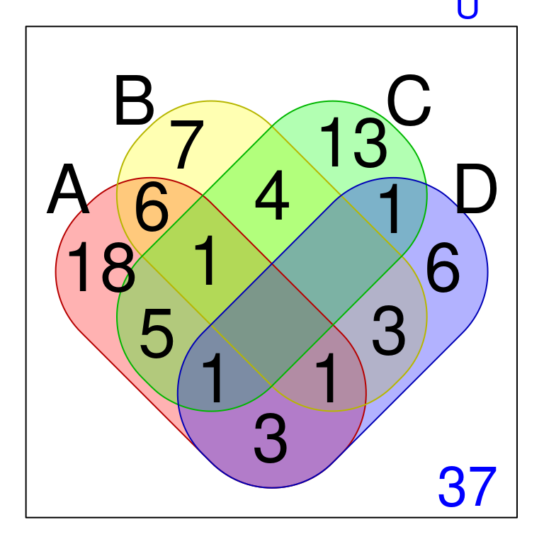
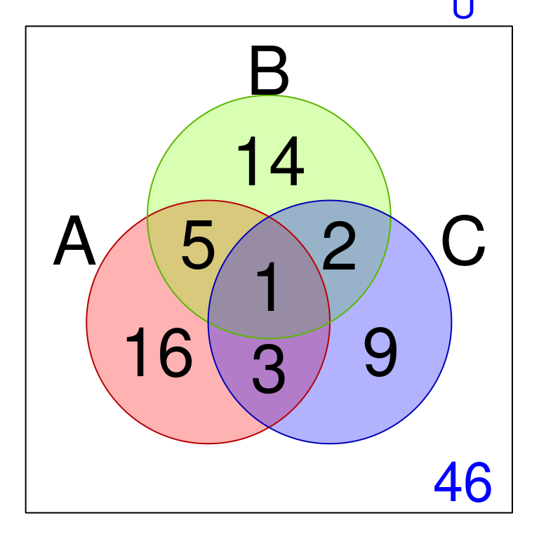

Capítulo 3 Probabilidad
3.1 Teoría de conjuntos
Definición3.1 Un conjunto es una colección bien definida de objetos, llamados sus elementos. Los conjuntos se simbolizan con letras mayúsculas \(A\), \(B\), \(...\) Los objetos que componen el conjunto se denominan elementos y se denotan con letras minúsculas \(a, b, ...\) [Tomado de (Zill and Dewar 2012) pág \(21\)]
Definición3.2 Para definir un conjunto por extensión, se enumeran todos sus elementos separándolos por comas y luego se encierran entre llaves.
Para escribir un conjunto por comprensión se elige un elemento arbitrario \(x\) y se señala que cumple la propiedad \(P(x)\). Finalmente, se encierra toda la expresión entre llaves. [Tomado de (Zill and Dewar 2012) pág \(22\)]
\[ A=\{ x | x \ \ \text{cumple la propiedad} \ \ P(x) \} \]
Definición3.3 Diremos que dos conjutnos \(A\) y \(B\) son iguales si tienen los mismos elementos. Para indicar que \(A\) y \(B\) son iguales se escribe:[Tomado de (Zill and Dewar 2012) pág \(22\)]
\[ A=B \]
Nota:. Un conjunto que posee un número finito de elementos; se llaman conjuntos finitos.
Un conjunto que no tiene un número finito de elemenos se llaman conjunto infinito.
[Tomado de (Zill and Dewar 2012) pág \(23\)]
Definición3.4 El número de elementos de un conjunto finito es lo que se llama la cardinalidad de dicho conjunto. La cardinalidad de un conjunto finito \(A\) se denota por: [Tomado de (Zill and Dewar 2012) pág \(24\)]
\[ Card(A) \ \ \ \text{ó} \ \ \ |A| \]
Definición3.5 Dos conjuntos finitos \(X\) y \(Y\) se dicen ser equipotentes si tienen exactamente el mismo número de elementos. [Tomado de (Zill and Dewar 2012) pág \(24\)]
Definición3.6 Un conjunto se dice vacío si no posee elementos. El conjunto vacío se denota como:
\[ \{ \} \ \ \ \text{ó} \ \ \ \Phi \]
Definición3.7 El conjunto universal se define como el conjunto que posee todos los elementos de todos los conjuntos, y se denota como:[Tomado de (Zill and Dewar 2012) pág \(25\)]
\[ \text{Conjunto universal:} \ \ \ U \]
Definición3.8 Si cada elemento de un conjunto \(A\) es también elemento de un conjunto \(B\), entonces se dice que \(A\) es un subconjunto de \(B\). Se dice también que \(A\) está contenido en \(B\) o que \(B\) contiene a \(A\). La relación de subconjunto se denota como: [Tomado de (Zill and Dewar 2012) pág \(25\)]
\[ A \subset B \ \ \ \text{ó} \ \ \ B \supset A \]
\[ A \subset B \ \ \ \text{si y sólo si } \ \ \ \ \text{Para todo } x, \ \ \ \ \ x \in A \ \ \ \text{entonces } \ \ \ x \in B \]

Figura 3.1: Inclusión de conjuntos
Definición3.9 La unión de dos conjuntos \(A\) y \(B\) consta de todos los elementos que pertenecen a \(A\) o a \(B\). La unión de \(A\) y \(B\) se denota por \(A \cup B\). [Tomado de (Zill and Dewar 2012) pág \(31\)]
\[ A \cup B = \{ x | x \in A \ \text{o} \ x \in B\} \]
Figura 3.2: Unión de conjuntos
3.2 Propiedades de la Unión
\[ \begin{matrix} (a) & A \cup B = B \cup A & \text{propiedad conmutativa} \\ (b) & (A \cup B) \cup C = A \cup (B \cup C) & \text{propiedad asociativa} \\ (c) & A \cup \Phi = A & \text{propiedad de la existencia para la identidad} \\ (d) & A \cup U = U & \text{propiedad de la existencia del conjunto absorbente} \end{matrix} \]
Definición3.10 La intersección de dos conjuntos \(A\) y \(B\) consta de todos los elementos que pertenecen a \(A\) y a \(B\). La intersección de \(A\) y \(B\) se denota por \(A \cap B\). [Tomado de (Zill and Dewar 2012) pág \(30\)]
\[ A \cap B = \{ x | x \in A \ \text{y} \ x \in B\} \]

Figura 3.3: Intersección de conjuntos
3.3 Propiedades de la Intersección
\[ \begin{matrix} (a) & A \cap B = B \cap A & \text{propiedad conmutativa} \\ (b) & (A \cap B) \cap C = A \cap (B \cap C) & \text{propiedad asociativa} \\ (c) & A \cap U = A & \text{propiedad de la existencia para la identidad} \\ (d) & A \cap \Phi = \Phi & \text{propiedad de la existencia del conjunto absorbente} \end{matrix} \]
3.4 Propiedades de la unión y la intersección
\[ \begin{matrix} (a) & A \cup (B \cap C) = (A \cup B) \cap (A \cup C) & \text{prop dist de la unión respecto a la intersección} \\ (b) & A \cap (B \cup C) = (A \cap B) \cup (A \cap C) & \text{prop dist de la intersección respecto a la unión} \end{matrix} \]
3.5 Diferencia entre dos conjuntos
Definición3.11 La diferencia de dos conjuntos \(A\) y \(B\) consta de todos los elementos que pertenecen a \(A\) y no pertenecen a \(B\). La diferencia de \(A\) y \(B\) se denota por \(A - B\). [Tomado de (Zill and Dewar 2012) pág \(34\)]
\[ A - B = \{ x | x \in A \ \text{y} \ x \notin B\} \]
Figura 3.4: Diferencia de conjuntos
\[ B - A = \{ x | x \in B \ \text{y} \ x \notin A\} \]

Figura 3.5: Diferencia de conjuntos
3.6 Complemento de un conjunto
Definición3.12 El complemento de un conjunto \(A\) consta de todos los elementos del universo \(U\), y que no pertenecen a \(A\). El complemento de \(A\) se denota por \(A^{c}\). [Tomado de (Zill and Dewar 2012) pág \(34\)]
\[ A'=A^{c} = \{ x | x \notin A \} \]

Figura 3.6: Complemento de un conjunto
3.7 Diferencia simétrica de un conjuntos
Definición3.13 La diferencia simétrica entre dos conjuntos \(A\) y \(B\) se define como el conjunto de todos los elementos del universo \(U\), que pertenecen a \((A-B) \cup (B-A)\).
Figura 3.7: Diferencia simétrica de conjuntos
3.8 Propiedades del algebra de conjuntos
\[\begin{equation} \begin{matrix} \text{Leyes de idemponentes} & &\\ (1a) \ \ A \cup A = A & (1b) \ \ A \cap A = A &\\ & & &\\ \text{Leyes asociativas} & &\\ (2a) \ \ (A \cup B) \cup C = A \cup (B \cup C) & (2b) \ \ (A \cap B) \cap C = A \cap (B \cap C) &\\ & & &\\ \text{Leyes conmutativas} & &\\ (3a) \ \ A \cup B = B \cup A & (3b) \ \ A \cap B = B \cap A &\\ & & &\\ \text{Leyes distributivas} & &\\ (4a) \ \ A \cup (B \cap C) = (A \cup B) \cap (A \cup C) & (4b) \ \ A \cap (B \cup C) = (A \cap B) \cup (A \cap C) &\\ & & &\\ \text{Leyes de identidad y absorción} & &\\ (5a) \ \ A \cup \Phi = A & (5b) \ \ A \cap U = A &\\ (6a) \ \ A \cup U = U & (6b) \ \ A \cap \Phi = \Phi &\\ & & &\\ \text{Ley involutiva} & &\\ (7a) \ \ (A^{c})^{c}=A & &\\ & & &\\ \text{Leyes del complementario} & &\\ (8a) \ \ A \cup A^{c} = U & (8b) \ \ A \cap A^{c} = \Phi &\\ (9a) \ \ U^{c} = \Phi & (9b) \ \ {\Phi}^{c} = U \\ & & &\\ \text{Leyes de De Morgan} & &\\ (10a) \ \ (A \cup B)^{c} = A^{c} \cap B^{c} & (10b) \ \ (A \cap B)^{c} = A^{c}\cup B^{c} \end{matrix} \end{equation}\]
3.8.1 Ejemplo1
![Ejemplo 1 de conjuntos [Imagen tomada de [@zill2012algebra] pág $33$]](images/EjemploConjuntos1.jpg)
Figura 3.8: Ejemplo 1 de conjuntos [Imagen tomada de (Zill and Dewar 2012) pág \(33\)]
A partir de la figura 3.8, obtener la solución a los enunciados de conjuntos
Obtener \(A \cup B=\{0, 2, 1, 3, 5, 7\}\)
Obtener \(A \cup C=\{0,2,6,8,1,3,5\}\)
Obtener \(C \cup B=?\)
Obtener \(A \cap B=?\)
Obtener \(A \cap C=?\)
Obtener \(C \cap B=?\)
Obtener \(A - B=?\)
Obtener \(B - A=\{7\}\)
Obtener \(A - C=?\)
Obtener \(C - B=?\)
Obtener \(B - C=?\)
Obtener \((A\cap B) - C=\{1,3,5\}\)
Obtener \((C\cap B) - A=?\)
3.8.2 Ejemplo2
![Ejemplo 2 de conjuntos [Imagen tomada de [@zill2012algebra] pág $35$]](images/EjemploConjuntos2.jpg)
Figura 3.9: Ejemplo 2 de conjuntos [Imagen tomada de (Zill and Dewar 2012) pág \(35\)]
A partir de la figura 3.9, obtener la solución a los enunciados de conjuntos
Obtener \(A \cup B=?\)
Obtener \(A \cap B=?\)
Obtener \(A - B=?\)
Obtener \(B - A=?\)
3.8.3 Ejemplo3
Figura 3.10: Ejemplo 3 de conjuntos [Imagen tomada de (Zill and Dewar 2012) pág \(33\)]
A partir de la figura 3.10, obtener la solución a los enunciados de conjuntos
Obtener \({\bigcup}_{i=1}^{2}A_{i} =A_1 \cup A_2=\{8,6,4,2,1,3,5,7 \}\)
Obtener \({\bigcap}_{i=2}^{3}A_{i} =?\)
Obtener \({\bigcup}_{i=1}^{3}A_{i} =?\)
Obtener \({\bigcap}_{i=1}^{2}A_{i} =?\)
Obtener \({\bigcap}_{i=2}^{3}A_{i} =?\)
Obtener \({\bigcap}_{i=1}^{3}A_{i} =?\)
Obtener \(\left({\bigcup}_{i=1}^{2}A_{i}\right) - A_3=?\)
Obtener \(A_1-\left({\bigcup}_{i=2}^{3}A_{i}\right)=?\)
3.9 Ejemplos de cardinalidad
Suponer que para cada uno de los siguientes ejmplos el cardinal del universo (e.d \(U\) ) es la suma de las magnitudes que representan los números en la gráfica.
3.9.1 Primer ejemplo dos conjuntos
A partir de la gáfica, obtener la solución a los enunciados de conjuntos:
Obtener el cardinal de \(A \cup B=?\)
Obtener el cardinal de \(A \cap B=?\)
Obtener el cardinal de \(A - B=?\)
Obtener el cardinal de \(B - A=?\)
Obtener el cardinal para el complemento de \(B - A=?\)
3.9.2 Segundo ejemplo tres conjuntos

A partir de la gáfica, obtener la solución a los enunciados de conjuntos:
Obtener el cardinal de \(A=?\)
Obtener el cardinal de \(B=?\)
Obtener el cardinal de \(C=?\)
Obtener el cardinal de \((A - B) \cup (B-A)=?\)
Obtener el cardinal de \((C - B) \cup (B-C)=?\)
Obtener el cardinal de \(B \cap A \cap C=?\)
Obtener el cardinal para el complemento de \(B - A=?\)
Obtener el cardinal de \(A \cup B=?\)
Obtener el cardinal de \(A \cap B=?\)
Obtener el cardinal de \(A - B=?\)
Obtener el cardinal de \(B - A=?\)
Obtener el cardinal para el complemento de \(C - A=?\)
3.9.3 Tercer ejemplo cuatro conjuntos

A partir de la gáfica, obtener la solución a los enunciados de conjuntos:
Obtener el cardinal de \(A=?\)
Obtener el cardinal de \(B=?\)
Obtener el cardinal de \(C=?\)
Obtener el cardinal de \(D=?\)
Obtener el cardinal de \((A - B) \cup (B-A)=?\)
Obtener el cardinal de \((C - B) \cup (B-C)=?\)
Obtener el cardinal de \((C - D) \cup (D-C)=?\)
Obtener el cardinal de \(D \cap A \cap C=?\)
Obtener el cardinal para el complemento de \(C - A=?\)
Obtener el cardinal de \(A \cup D=?\)
Obtener el cardinal de \(D \cap B=?\)
Obtener el cardinal de \(A - B=?\)
Obtener el cardinal de \(C - A=?\)
Obtener el cardinal para el complemento de \(D - A=?\)
3.9.4 Cuarto ejemplo (lectura de revistas)
En un grupo universal (\(U\)) para lectura se tienen tres subgrupos de lectura para las revistas \(A\), \(B\), y \(C\).

A partir de la gáfica, obtener la solución a los enunciados de conjuntos:
Obtener el cardinal de lectura para la revista \(A=?\)
Obtener el cardinal de lectura para la revista \(B=?\)
Obtener el cardinal de lectura para la revista \(C=?\)
Qué significa el cardinal de \((A - B) \cup (B-A)\) para el grupo de lectura?.
Qué significa el cardinal de \((C - B) \cup (B-C)\) para el grupo de lectura?.
Qué significa el cardinal de \(B \cap A \cap C\) para el grupo de lectura?.
Qué significa el cardinal del complemento \(B - A\) para el grupo de lectura?.
Cúal es el cardinal de los que no leen las tres revistas?
3.10 Conjuntos numéricos
![Número Irracional [Imagen tomada de [@zill2012algebra] pág $50$]](images/FigPinumero.png)
Figura 3.11: Número Irracional [Imagen tomada de (Zill and Dewar 2012) pág \(50\)]
Definición3.14 El conjunto de los números naturales consta de:
\[ N=\{ 1,2,3,4,...\} \]
Definición3.15 El conjunto de los números enteros consta de:
\[ Z=\{...,-3,-2,-1,0,1,2,3,4,...\} \]
Definición3.16 El conjunto de los números racionales consta de todos los números que son cociente de dos enteros, siempre que el denominador sea diferente de cero. Es decir:
\[ Q=\{ \dfrac{p}{q} | p \ \text{y} \ q \ \ \text{son números enteros,} \ \ q \ \neq \ 0\} \] ::: {.definition #unnamed-chunk-19} El conjunto de los números irracionales consta de todos los números que no son el cociente de dos enteros, siempre que el denominador sea diferente de cero. Es decir: :::
\[ Q^{*}=\{x | \ x \neq \ \dfrac{p}{q}, \ \ q \ \neq \ 0\ \} \] ::: {.definition #unnamed-chunk-20} El conjunto de los números reales consta de la unión entre el conjunto de los racionales y los irracionales. Es decir: :::
\[ R=\{x | \ x \in Q \ \text{o} \ x \in Q^{*} \}=Q \cup Q^{*} \]
![Diagrama de los conjuntos numéricos [Imagen tomada de [@swokowski1996algebra] pág $3$]](images/EsquemaConjuntosReales1.jpg)
Figura 3.12: Diagrama de los conjuntos numéricos [Imagen tomada de (Swokowski and COLE 1996) pág \(3\)]
3.11 Propiedades de los números reales
\[\begin{equation} \begin{matrix} \text{Propiedad de cerradura} & &\\ (1a) \ \ a+b \ \text{es un número real} & (1b) \ \ a.b \ \text{es un número real} &\\ & & &\\ \text{Propiedad conmutativa} & &\\ (2a) \ \ a+b = b+a \ & (2b) \ \ a.b = b.a \ &\\ & & &\\ \text{Propiedad asociativa} & &\\ (3a) \ \ (a+b)+c = a+(b+c) \ & (3b) \ \ (a.b).c = a.(b.c) \ &\\ & & &\\ \text{Propiedad de identidad} & &\\ (4a) \ \ a+0 = 0+a = a \ & (4b) \ \ a.1 = 1.a = a \ &\\ & & &\\ \text{Propiedad del inverso} & &\\ (5a) \ \ a+(-a) = (-a)+a = 0 \ & (5b) \ \ a.\dfrac{1}{a} = \dfrac{1}{a}.a = 1, \ \ a \neq 0 &\\ & & &\\ \text{Propiedad distributiva} & &\\ (6a) \ \ a.(b + c) = ab + ac \ & (6b) \ \ (a + b).c = ac + bc \ &\\ & & &\\ \text{PROPIEDADES ADICIONALES} & &\\ & & &\\ \text{Propiedad de la igualdad} & &\\ (7a) \ \ \text{Si} \ a = b, \ \ \text{entonces} \ \ a + c = b + c, \ & \ \ \text{para todo número real } c \ &\\ & & &\\ (7b) \ \ \text{Si} \ a = b, \ \ \text{entonces} \ \ a.c = b.c, \ & \ \ \text{para todo número real } c \ &\\ & & &\\ \text{Propiedad de la multiplicación por cero} & &\\ (8a) \ \ \text{Si} \ a.0 = 0.a = 0, \ \ \ \ \ \ & \ \ \text{para todo número real } a \ &\\ & & &\\ (8b) \ \ \text{Si} \ a.b = 0, \ \ \text{entonces} \ \ a = 0, \ \ \ b = 0, \ & \ \ \text{ó ambas } \ &\\ & & &\\ \text{Propiedad de cancelación} & &\\ (9a) \ \ \text{Si} \ a.c = b.c, \ \ \text{y} \ \ c \neq 0, \ \ \text{entonces } a = c & \ \ \text{para todo número real } c \neq 0 \ &\\ & & &\\ (9b) \ \ \ \dfrac{a.c}{b.c} = \dfrac{a}{b}, \ \ \text{siempre que} \ \ b \neq 0, \ \ \text{y } \ \ c \neq 0, \ \ \ & \ \ &\\ & & &\\ \text{Propiedad para el manejo del signo} & &\\ (10a) \ \ -(-a) = a \ & (10b) \ \ -(a.b) = (-a).b = a.(-b) \ &\\ & & &\\ (10c) \ \ -a = (-1).a \ & (10d) \ \ (-a).(-b) = a.b \ &\\ & & &\\ \text{Propiedad para el manejo de fracciones} & &\\ (11a) \ \ \dfrac{a}{b} = \dfrac{c}{d} \ \ \text{si y sólo si } \ \ ad = bc & (11b) \ \ -\dfrac{a}{b} = \dfrac{-a}{b} = \dfrac{a}{-b} \ &\\ & & &\\ (11c) \ \ \dfrac{a}{b} \pm \dfrac{c}{b} = \dfrac{a \pm c}{b} \ & (11d) \ \ \dfrac{a}{b} \pm \dfrac{c}{d} = \dfrac{ad \pm cb}{bd} \ &\\ & & &\\ (11e) \ \ \dfrac{a}{b} \times \dfrac{c}{b} = \dfrac{a.c}{b.d} \ & (11f) \ \ \dfrac{a}{b} \div \dfrac{c}{d} = \dfrac{a}{b} \times \dfrac{d}{c} =\dfrac{a.d}{b.c} \ &\\ & & &\\ \text{División de cero y División por cero} & &\\ (12a) \ \ \dfrac{a}{0} = a \div 0 = \text{IND}, \ \ a \neq 0 & (12b) \ \ \dfrac{0}{0} = 0 \div 0 = \text{IND} \ &\\ & & &\\ (12c) \ \ \dfrac{0}{a} = 0 \div a = 0, \ \ a \neq 0 \ & \ \ \ &\\ & & &\\ \end{matrix} \end{equation}\]
3.12 Ejemplos de fracciones en los números reales
\[\begin{equation} \begin{matrix} \text{Igualdad de fracciones o proporciones} & \\ \text{Ejemplo de ilustración} &\\ (1a) \ \ \dfrac{a}{b} = \dfrac{c}{d} \ \ \text{si y sólo si } \ \ ad = bc & \\ (1b) \ \ \dfrac{2}{5} = \dfrac{6}{15} \ \ \text{ porque } \ \ (2).(15) = (5).(6) = 30 &\\ & & &\\ \text{Simplificación en una fracción o proporción} & \\ \text{Ejemplo de ilustración} &\\ (2a) \ \ \dfrac{a.d}{b.d} = \dfrac{a}{b} \ \ \text{ } \ \ & \\ (2b) \ \ \dfrac{6}{15} = \dfrac{(2).(3)}{(5).(3)} = \dfrac{2}{5} \ \ \text{ } \ \ &\\ & & &\\ \text{Manejo del signo en una fracción o proporción} & \\ \text{Ejemplo de ilustración} &\\ (3a) \ \ -\dfrac{a}{b} = \dfrac{-a}{b} = \dfrac{a}{-b} \ \ \text{ } \ \ & \\ (3b) \ \ -\dfrac{2}{5} = \dfrac{-2}{5} = \dfrac{2}{-5} \ \ \text{ } \ \ &\\ & & &\\ \text{Suma de fracciones homogeneas ó con igual denominador} & \\ \text{Ejemplo de ilustración} &\\ (4a) \ \ \dfrac{a}{b} + \dfrac{c}{b} = \dfrac{a + c}{b} \ \ \text{ } \ \ & \\ (4b) \ \ \dfrac{3}{7} + \dfrac{9}{7} = \dfrac{3 + 9}{7} = \dfrac{12}{7} \ \ \text{ } \ \ &\\ & & &\\ \text{Diferencia de fracciones homogeneas ó con igual denominador} & \\ \text{Ejemplo de ilustración} &\\ (5a) \ \ \dfrac{a}{b} - \dfrac{c}{b} = \dfrac{a - c}{b} \ \ \text{ } \ \ & \\ (5b) \ \ \dfrac{3}{7} - \dfrac{9}{7} = \dfrac{3 - 9}{7} = \dfrac{-6}{7} \ \ \text{ } \ \ &\\ & & &\\ \text{Suma de fracciones no homogeneas ó con diferentes denominadores} & \\ \text{Ejemplo de ilustración} &\\ (6a) \ \ \dfrac{a}{b} + \dfrac{c}{d} = \dfrac{a.d + b.c}{b.d} \ \ \text{ } \ \ & \\ (6b) \ \ \dfrac{3}{5} + \dfrac{9}{7} = \dfrac{(3)(7) + (5)(9)}{(5)(7)} = \dfrac{21 + 45}{35} = \dfrac{66}{35} \ \ \text{ } \ \ &\\ & & &\\ \text{Diferencia de fracciones no homogeneas ó con diferentes denominadores} & \\ \text{Ejemplo de ilustración} &\\ (7a) \ \ \dfrac{a}{b} - \dfrac{c}{d} = \dfrac{a.d - b.c}{b.d} \ \ \text{ } \ \ & \\ (7b) \ \ \dfrac{3}{5} - \dfrac{9}{7} = \dfrac{(3)(7) - (5)(9)}{(5)(7)} = \dfrac{21 - 45}{35} = \dfrac{-24}{35} \ \ \text{ } \ \ &\\ & & &\\ \text{Producto de fracciones no homogeneas ó con diferentes denominadores} & \\ \text{Ejemplo de ilustración} &\\ (8a) \ \ \dfrac{a}{b} \times \dfrac{c}{d} = \dfrac{a.c}{b.d} \ \ \text{ } \ \ & \\ (8b) \ \ \dfrac{3}{5} \times \dfrac{9}{7} = \dfrac{(3)(9)}{(5)(7)} = \dfrac{27}{35} \ \ \text{ } \ \ &\\ & & &\\ \text{División de fracciones no homogeneas ó con diferentes denominadores} & \\ \text{Ejemplo de ilustración} &\\ (9a) \ \ \dfrac{a}{b} \div \dfrac{c}{d} = \dfrac{a}{b} \times \dfrac{d}{c} = \dfrac{a.d}{b.c} \ \ \text{ } \ \ & \\ (9b) \ \ \dfrac{3}{5} \div \dfrac{9}{7} = \dfrac{3}{5} \times \dfrac{7}{9} = \dfrac{(3)(7)}{(5)(9)} = \dfrac{21}{45} = \dfrac{7}{15} \ \ \text{ } \ \ &\\ & & &\\ \end{matrix} \end{equation}\]
3.13 Conceptos introductorios de probabilidad
Figura 3.13: Esquema de probabilidad y conjuntos [Imagen tomada de (Zill and Dewar 2012) pág \(55\)]
![Esquema de probabilidad y conjuntos [Imagen tomada de [@zill2012algebra] pág $55$]](images/ConjuntosT2.jpg)
Figura 3.14: Esquema de probabilidad y conjuntos [Imagen tomada de (Zill and Dewar 2012) pág \(55\)]
Figura 3.15: Esquema de probabilidad y conjuntos [Imagen tomada de (Zill and Dewar 2012) pág \(55\)]
Definición3.17 Se dice que un espacio muestral \(S\) es discreto si su resultado puede ponerse en una correspondencia uno a uno con el conjunto de los enteros positivos.
Definición3.18 Un conjunto \(S\) que consta de todos los resultados posibles de un experimento aleatorio se llama espacio muestral, y cada resultado se denomina punto muestral. Con frecuencia habrá más de un espacio muestral que puede describir los resultados de un experimento, pero generalmente habrá uno que provee la mayor información.
Definición3.19 Se dice que un espacio muestral \(S\) es continuo si sus resultados consisten de un intervalo de números reales.
Definición3.20 Un evento \(A\) del espacio muestral \(S\) es un grupo (ó subconjunto) de resultados contenidos en éste, cuyos miembros tiene una caracteríscita común.
Definición3.21 Un evento es un subconjunto \(A\) del espacio muestral \(S\), es decir, un conjunto de resultados posibles. Si el resultado de un experimento es un elemento de \(A\), decimos que el evento \(A\) ocurrió. Un evento que consta de un punto sencillo de \(S\) se denomina con frecuencia un evento simple o elemental.
Definición3.22 Sean \(S\) cualquier espacio muestral y \(A\) cualquier evento de éste. Se llamará función de probabilidad sobre el espacio muestral \(S\) a \(P(A)\) si satisface los siguientes axiomas:
3.14 Definición1(Frecuentista)
Probabilidad empírica La probabilidad de que un evento ocurra representa una fracción de los eventos similares que sucedieron en el pasado.
Fórmula
\[ \text{Probabilidad empírica}=\dfrac{\text{Número de veces en que el evento ha ocurrido en el pasado}}{\text{Número total de observaciones}} \]
3.15 Definición2(Clásica)
Probabilidad clasica La probabilidad clásica de un evento \(E\) se determina mediante la
Fórmula
\[ \text{Probabilidad clásica}=\dfrac{\text{Número de formas en las que puede ocurrir un evento}}{\text{Número total de posibles resultados}} \]
La probabilidad clásica implica la determinación de la probabilidad de algún evento a priori (antes del hecho)
3.16 Simulaciones básicas
3.17 Lanzamiento de un dado
Lanzamiento de un dado
Espacio muestral
\[ S=\{1,2,3,4,5,6\} \]
Evento : Subconjunto del espacio \(S\)
\[ A=\{2,4,6\} \]
\[ B=\{1,3,5\} \]
3.18 Lanzamiento de dos dados
Espacio muestral al lanzar dos dados
\[ S=\{(R1D=2,R2D=2);...\} \]
Primera componente resultados del primer dado Segunda componente resultados del segundo dado
\[ S=\{(2,2);(1,6);(1,3);(4,4);...\} \]
Generar todas las posibles parejas al lanzar dos dados en forma inst.
Posibles Resultados de un dado (1):
\[ D1=\{1,2,3,4,5,6\} \]
Posibles Resultados de un dado (2):
\[ D2=\{1,2,3,4,5,6\} \]
las posibles parejas se realizan con el producto cartesiano
X=D1
Y=D2
\[ S=D1 \times D2=\{(1,1);(1,2);(1,3);(1,4);(1,5);(1,6); (2,1);(2,2);(2,3);(2,4);(2,5);(2,6);...\} \]
Evento de los dados que al caer suman siete
\[ A=\{(1,6);(6,1);(2,5);(5,2);(3,4);(4,3)\} \]
3.19 Lanzamiento de una moneda tres veces
![Tabla del lanzamiento de una moneda tres veces [Imagen tomada de [@zill2012algebra] pág $188$]](images/Lanzamiento4veceUnaMoneda1.jpg)
Figura 3.16: Tabla del lanzamiento de una moneda tres veces [Imagen tomada de (Zill and Dewar 2012) pág \(188\)]
3.20 Axioma Uno de la probabilidad
Para cualquier evento \(A\) contenido en el espacio de los resultados \(S\), se cumple que
\[P(A)\geq 0\]
3.21 Axioma Dos de la probabilidad
Si \(S\) es el conjunto que representa el espacio muestral de los resultados, entonces
\[P(S)=1\]
3.22 Axioma Tres de la probabilidad
Si para los eventos \(A_1,A_2,...,\) y \(A_i \cap A_j=\phi\) para toda \(i \neq j\), entonces
\[\begin{equation} P(A_1 \cup A_2 \cup A_3 \cup...\cup A_k\cup...)=\\P(A_1)+P(A_2)+...+P(A_k)+...=\sum_{i=1}^{\propto}P(A_i) \end{equation}\]
3.23 Teoremas básicos de probabilidad
Teorema 3.1 Si \(A_1 \subset A_2\), entonces \(P(A_1) \leq P(A_2)\), y \(P(A_2-A_1)=P(A_2)-P(A_1)\)
Teorema 3.2 Para todo evento \(A\)
\[0 \leq P(A) \leq 1\]
o sea, la probabilidad está entre \(0\) y \(1\)
Teorema 3.3 \[ P(\Phi)=0 \]
es decir, el evento imposible tiene probabilidad cero.
Teorema 3.4 Si \(A^{c}\) es el complemento de \(A\), entonces
\[P(A^{c})=1-P(A)\]
Definición3.23 Se dice que dos eventos \(A\) y \(B\) son mutumente excluyentes si no tienen resultados, o elementos comunes. En otras palabras los eventos \(A\) y \(B\) no pueden ocurrir al mismo tiempo.
Teorema 3.5 Si \(A=A_1\cup A_2... \cup A_n\), donde \(A_1\), \(A_2\), \(...\), \(A_n\) son mutuamente excluyentes, entonces
\[P(A)=P(A_1)+P(A_2)+...+P(A_n)=\sum_{i=1}^{n}P(A_i)\]
Teorema 3.6 Si \(A\) y \(B\) son dos eventos cualesquiera, entonces
\[P(A \cup B)= P(A)+P(B)- P(A \cap B)\]
Teorema 3.7 Para cualquier par de eventos \(A\) y \(B\),
\[P(A)=P(A \cap B)+P(A \cap B^{c})\]
Teorema 3.8 Si un evento \(A\) debe dar como resultado la ocurrencia de uno de los eventos mutuamente excluyentes \(A_1\), \(A_2\),…,\(A_n\), entonces
\[P(A)=P(A \cap A_1)+P(A \cap A_2) +...+ P(A \cap A_n)\]
Teorema 3.9 Sean \(A\) y \(B\) dos eventos tales que \(P(A)>0\). Denótese por \(P(B|A)\) la probabilidad de \(B\) dado que ocurrió \(A\). Puesto que sabemos que ocurrió \(A\), éste se convierte en el nuevo espacio muestral reemplazando al original \(S\). A partir de esto llegamos a la definción
\[P(B|A)=\dfrac{P(A\cap B)}{P(A)}\]
\[P(A\cap B)=P(B|A)P(A)\]
NOTA: Para tres eventos cualesquiera \(A_1\), \(A_2\), \(A_3\), tenemos
\[P(A_1 \cap A_2 \cap A_3)=P(A_1)P(A_2|A_1)P(A_3| A_1 \cap A_2)\]
Teorema 3.10 Si un evento \(A\) debe originar uno de los eventos mutuamente excluyentes \(A_1\), \(A_2\), \(...\), \(A_n\), entonces
\[P(A)=P(A_1)P(A|A_1)+P(A_2)P(A|A_2)+P(A_3)P(A|A_3)+...+P(A_n)P(A|A_n)\]
Teorema 3.11 Suponga que \(A_1\), \(A_2\), \(...\), \(A_n\), son eventos mutuamente excluyentes cuya unión es el espacio muestral \(S\), es decir, que debe ocurrir uno de los eventos. Entonces si \(B\) es un evento cualquiera, tenemos
\[P(A_k|B)=\dfrac{P(A_k)P(B|A_k)}{\sum_{j=1}^{n}P(A_j)P(B|A_j)}\]
Esto nos permite encontrar las probabilidades de diferentes eventos \(A_1\), \(A_2\), \(...\), \(A_n\) que pueden hacer que ocurra \(B\).
Este teorema se conoce como el teorema de Bayes (ó el teorema de la probabilidad de las causas)
Figura 3.17: Teorema de Bayes [Imagen tomada de (Zill and Dewar 2012) pág \(51\)]
3.24 Demostración probabilidad del complemento
Demostrar que \(P(A^{c})=1-P(A)\)
Justificación (ó argumentación)
\[ \begin{split} S &= A^{c} \cup A \\ P(S) &= P(A^{c} \cup A) \\ &= P(A^{c})+P(A), \ \ \ \ \ \text{ya que } A^{c} \cap A = \Phi\\ 1 &= P(A^{c})+P(A), \ \ \ \ \ \text{ya que } P(S)=1\\ 1-P(A) &= P(A^{c}), \ \ \ \ \ \text{Q.E.D. } \end{split} \]
3.25 Demostración probabilidad de la inclusión
Demostrar que si \(A \subseteq B\), entonces \(P(A) \leq P(B)\)
Justificación (ó argumentación)
Figura 3.18: Justificación teorema 3.1 [Imagen tomada de (Zill and Dewar 2012) pág \(188\)]
\[ \begin{split} B &= A \cup (B-A) \\ P(B) &= P(A \cup (B-A)) \\ &= P(A)+P(B-A), \ \ \ \ \ \text{ya que } A \cap(B-A) = \Phi\\ \text{Luego, } P(A) &\leq P(B), \ \ \ \ \ \text{Q.E.D. } \end{split} \]
3.26 Demostración probabilidad de la unión
Demostrar que \(P(A \cup B)=P(A)+P(B)-P(A \cap B)\)
Justificación (ó argumentación)
Figura 3.19: Justificación teorema 3.6 [Imagen tomada de (Zill and Dewar 2012) pág \(188\)]
\[ \begin{split} A \cup B &= A \cup (B-A) \\ P(A \cup B) &= P\left( A \cup (B-A) \right) \\ P(A \cup B) &= P(A)+P(B-A), \ \ \ \ \ \text{ya que } A \cap(B-A) = \Phi\\ P(A \cup B) - P(A) &= P(B-A) \ \ \ \ (1) \end{split} \]
De otro lado
Figura 3.20: Justificación teorema 3.6 [Imagen tomada de (Zill and Dewar 2012) pág \(188\)]
\[ \begin{split} B &= (A \cap B)\cup (B-A) \\ P(B) &= P(A \cap B)+P(B-A), \ \ \ \ \ \text{ya que } A\cap B) \cap(B-A) = \Phi\\ \\ P(B) - P(A \cap B) &= P(B-A) \ \ \ \ (2) \end{split} \]
de \((1)\) y \((2)\)
\[ \begin{split} P(A \cup B) - P(A) &= P(B-A) \\ P(B) - P(A \cap B) &= P(B-A) \end{split} \] Igualamos los lados izquierdos, así
\[ \begin{split} P(A \cup B) - P(A) &= P(B) - P(A \cap B) \\ P(A \cup B) &= P(A)+P(B) - P(A \cap B), \ \ \ \ \ \text{Q.E.D. } \end{split} \]
3.26.1 Ejemplo 1
Suponga que lanzamos un dado justo una vez.
¿Qué probabilidad hay de obtener \(7\)?
Respuesta
Como el número \(7\) no está incluido en el conjunto \(S\) de todos los posibles resultados, el evento \(A\) de obtener un \(7\) es un evento imposible, es decir \(A=\Phi\). Entonces
\[ P(A)=P(\text{Obtener un 7})=\dfrac{0}{6}=0 \]
3.26.2 Ejemplo 2
Suponga que lanzamos un dado justo una vez.
¿Qué probabilidad hay de obtener un número menor que \(7\)?
Respuesta
Ya que el resultado de lanzar un dado son todos enteros positivos menores que \(7\), entonces el evento \(A\): obtener un número menor que \(7\) es
\[ A=\{1,2,3,4,5,6\}=S \]
de donde
\[ P(A)=\dfrac{6}{6}=1 \]
3.26.3 Ejemplo 3
El 1 de febrero de 2003 explotó el transbordador espacial Columbia. Este fue el segundo desastre en 113 misiones espaciales de la NASA. Con base en esta información, cuál es la probabilidad de que una futura misión concluya con éxito?
\[ \text{Probabilidad de un vuelo exitoso}=\dfrac{111}{113}=0.98 \]
3.26.4 Ejemplo 4
Una encuesta de 34 estudiantes en una Universidad mostró que éstos tiene las siguientes especialidades:
Contabilidad 10
Finanzas 5
Economía 3
Administración 6
Marketing 10
Suponga que elige a un estudiante y observa su especialidad.
Cuál es la probabilidad de que el estudiante tenga una especialidad en Administración?
Solución:
\[ \text{Probabilidad de que sea especialista en Administración}=\dfrac{6}{34}=\dfrac{3}{17}=0.18 \]
Definición3.24 Se dice que dos eventos \(A\) y \(B\) son mutumente excluyentes si no tienen resultados, o elementos comunes. En otras palabras los eventos \(A\) y \(B\) no pueden ocurrir al mismo tiempo.
En términos de conjuntos, \(A\) y \(B\) son conjuntos disjuntos o ajenos; es decir,
\[ A \cap B=\Phi \]
3.27 Regla de la adición
Para aplicar la regla de la adición, los eventos deben ser mutuamente excluyentes. Es decir si tenemos dos eventos son \(A\), y \(B\), estos son mutuamente excluyentes si su intersección es el vacío. Es decir
\[ A\cap B =\Phi \]
3.27.1 Ejemplo3
Una máquina automática llena bolsas de plástico con una combinación de frijoles, brócoli y otras verduras. La mayoría de las bolsas contiene el peso correcto, aunque, como consecuencia de la variación del tamaño del frijol y de otras verduras, un paquete podría pesar menos o más. Una versión de \(4000\) paquetes que se llenaron el mes pasado arrojó los siguientes datos:
Cuál es la probabilidad de que un paquete en particular pese menos o pese más?
Peso <- c("Menos peso","Peso satisfactorio","Más peso")
Evento <- c("A","B","C")
Numero_Paquetes <- c(10,3600,300)
Probabilidad <- c(0.025,0.900,0.075)
Ejemplo <- data.frame(Peso, Evento, Numero_Paquetes, Probabilidad)
knitr::kable(
Ejemplo , caption = 'Tabla en Frecuencia para Datos Agrupados',
booktabs = TRUE
)| Peso | Evento | Numero_Paquetes | Probabilidad |
|---|---|---|---|
| Menos peso | A | 10 | 0.025 |
| Peso satisfactorio | B | 3600 | 0.900 |
| Más peso | C | 300 | 0.075 |
Solución: Como \(A\) y \(C\) son eventos excluyentes, entonces \(A\cap C=\Phi\), ya que un paquete de verduras mixtas no puede pesar menos, tener el peso satisfactorio y pesar más al mismo tiempo.
\[ P(A \ \text{ó} \ C)=P(A\cup C)=P(A)+P(C) \]
\[ P(A\cup C)=P(A)+P(C)=0.025+0.075=0.10 \]
Definición3.25 Se dice que dos eventos \(A\) y \(B\) son independientes, si \(P(B|A)=P(B)\). Es decir, la probabilidad de que ocurra \(B\) no está afectada por la ocurrencia o no de \(A\). Además esto equivale a:
\[P(A \cap B)=P(A)P(B)\]
Definición3.26 Una tabla de contingencia es cuadro que se utiliza para clasificar observaciones de una muestraa de acuerdo con dos o más características identificables.
Figura 3.21: Esquema de probabilidad conjunta [Imagen tomada de (Zill and Dewar 2012) pág \(188\)]
3.28 Ley de los grandes números
En una gran cantidad de intentos, la probabilidad empírica de un evento se aproxima a su probabilidad real.
![Tabla ley de los grandes números [Imagen tomada de [@zill2012algebra] pág $188$]](images/TABLALeyGrandesN1.jpg)
Figura 3.22: Tabla ley de los grandes números [Imagen tomada de (Zill and Dewar 2012) pág \(188\)]
3.29 Tabla de contingencia
Figura 3.23: Tabla de contingencia definiciones básicas [Imagen tomada de (Zill and Dewar 2012) pág \(188\)]
La tabla describe la relación entre dos eventos \(A\) y \(B\). Para obtener \(P(A_{j})\) se debe proceder como:
\[ P(A_{j})=\sum_{i=1}^{2}\frac{n_{ij}}{n} \]
Ejemplo
La tabla de contingencia muestra la relación entre el color de cabello del pelo y el color de ojos de un grupo de \(1770\) hombres alemanes.
Figura 3.24: Tabla de contingencia realción del color de cabello y color de ojos [Imagen tomada de (Zill and Dewar 2012) pág \(188\)]
\[ j=1,j=2 \\ p(A_j)=\sum_{i=1}^2\dfrac{n_{ij}}{n}=\dfrac{n_{1j}}{n}+\dfrac{n_{2j}}{n}=\dfrac{n_{1j}+n_{2j}}{n}\\ p(A_1)=\sum_{i=1}^2\dfrac{n_{i1}}{n}=\dfrac{n_{11}}{n}+\dfrac{n_{21}}{n}=\dfrac{n_{11}+n_{21}}{n}\\ p(A_2)=\sum_{i=1}^2\dfrac{n_{i2}}{n}=\dfrac{n_{12}}{n}+\dfrac{n_{22}}{n}=\dfrac{n_{12}+n_{22}}{n}\\ p(A_3)=\sum_{i=1}^2\dfrac{n_{i3}}{n}=\dfrac{n_{13}}{n}+\dfrac{n_{23}}{n}=\dfrac{n_{13}+n_{23}}{n} \]
Figura 3.25: Tabla de contingencia definiciones básicas [Imagen tomada de (Zill and Dewar 2012) pág \(188\)]
La tabla describe la relación entre dos eventos \(A\) y \(B\). Para obtener \(P(B_{i})\) se debe proceder como:
\[ P(B_{i})=\sum_{j=1}^{2}\frac{n_{ij}}{n} \]
\[ i=1,i=2\\ p(B_i)=\sum_{j=1}^2\dfrac{n_{ij}}{n}=\dfrac{n_{i1}}{n}+\dfrac{n_{i2}}{n}=\dfrac{n_{i1}+n_{i2}}{n}\\ p(B_1)=\sum_{j=1}^2\dfrac{n_{1j}}{n}=\dfrac{n_{11}}{n}+\dfrac{n_{12}}{n}=\dfrac{n_{11}+n_{12}}{n}\\ p(B_2)=\sum_{j=1}^2\dfrac{n_{2j}}{n}=\dfrac{n_{21}}{n}+\dfrac{n_{22}}{n}=\dfrac{n_{21}+n_{22}}{n}\\ p(B_3)=\sum_{j=1}^2\dfrac{n_{3j}}{n}=\dfrac{n_{31}}{n}+\dfrac{n_{32}}{n}=\dfrac{n_{31}+n_{32}}{n}\\ \]
Figura 3.26: Tabla de contingencia definiciones básicas [Imagen tomada de (Zill and Dewar 2012) pág \(188\)]
La tabla describe la relación entre dos eventos \(A\) y \(B\). Para obtener \(P(A_{j}\cap B_{i})\) se debe proceder como:
\[ P(A_{j}\cap B_{i})=\frac{n_{ij}}{n} \]
\[\begin{equation} P(A_j\cap B_i)=\dfrac{n_{ij}}{n}\\ i=1,j=1\\ P(A_1\cap B_1)=\dfrac{n_{11}}{n} \end{equation}\]
\[\begin{equation} P(A_2\cap B_2)=\dfrac{n_{22}}{n} \end{equation}\]
nal <- 400/1770
round(nal,2)*100## [1] 23La tabla describe la relación entre dos eventos \(A\) y \(B\). Para obtener \(P(B_{i} | A_{j})\) se debe proceder como:
\[ \dfrac{P(B_{i}\cap A_{j})}{P(A_{j})}=P(B_{i} | A_{j})=\dfrac{n_{ij}}{\sum_{i=1}^{2}n_{ij}} \]
\[ \dfrac{P(B_{i=1}\cap A_{j=2})}{P(A_{j=2})}=P(B_{1} | A_{2})=\dfrac{n_{ij}}{\sum_{i=1}^{2}n_{ij}}=\dfrac{n_{12}}{n_{12}+n_{22}} \]
\[\begin{equation} i=1,2\\ j=1,2,3\\ P(A_j\cap B_i)=\dfrac{n_{ij}}{n}\\ i=1;j=1\\ P(A_1\cap B_1)=\dfrac{n_{11}}{n}\\ P(\text{ojos castaños y cabello castaño})=P(A_1\cap B_1)=\dfrac{n_{11}}{n}=\dfrac{400}{1770}\\ P(\text{ojos castaños y cabello rojo})=P(A_3\cap B_1)=\dfrac{n_{13}}{n}=\dfrac{20}{1770}\\ \end{equation}\]
3.29.1 Ejemplo(Encuesta de ver cine)
Ejemplo
Una encuesta de \(150\) adultos clasificados según su género y la cantidad de películas que vieron cine el mes pasado.
Figura 3.27: Tabla de contingencia de películas según el genero [Imagen tomada de (Zill and Dewar 2012) pág \(188\)]
Cúal es la probabilidad de que no se vió ninguna película
donde:
\(B_1\): Cero películas
\(B_2\): Una sola película
\(B_3\): Dos o más películas
\(n\): Tamaño de la muestra es de \(150\) personas
\(A_1\): Hombres
\(A_2\): Mujeres
n<- 150
numB1 <- 60
rd1 <- round(numB1/n,2)\[P(B_1)=\dfrac{60}{150}=0.4\]
n<- 150
numB2 <- 70
rd2 <- round(numB2/n,2)\[P(B_2)=\dfrac{70}{150}=0.47\]
n<- 150
numB3 <- 70
rd3 <- round(numB3/n,2)\[P(B_3)=\dfrac{70}{150}=0.47\]
n <- 150
numA1 <- 70
rd4 <- round(numA1/n,2)\[ P(A_1)=\dfrac{70}{150}= 0.47 \]
n <- 150
numA2 <- 80
rd5 <- round(numA2/n,2)\[ P(A_2)=\dfrac{80}{150}= 0.53 \]
n <- 150
numB3A2 <- 10
rd6 <- round(numB3A2/n,2)\[ P(A_2\cap B_3)=\dfrac{10}{150}= 0.07 \]
3.30 Probabilidad condicional y tabla de contingencia
Probabilidad condicional
Si tenermos dos eventos \(A\), \(B\)
siempre que \(P(A)>0\) y \(P(B)>0\), entonces
\[\begin{equation} P(A|B)=\dfrac{P(A\cap B)}{P(B)}\\ P(B|A)=\dfrac{P(A\cap B)}{P(A)} \end{equation}\]
\[\begin{equation} P(A\cap B)=P(A).P(A|B) \end{equation}\]
\[\begin{equation} P(A\cap B)=P(B).P(B|A) \end{equation}\]
3.30.1 Ejemplo(Café)
Figura 3.28: Tabla de contingencia de películas segun el genero [Imagen tomada de (Zill and Dewar 2012) pág \(188\)]
GRAFICAtabladeContingencia3
\(B_1\): Menos de 30
\(B_2\): Entre 30 a 40
\(B_3\): Entre 40 a 50
\(B_4\): 50 ó más
\(n\): Tamaño de la muestra es de \(150\) personas
\(A_1\): Bajo
\(A_2\): Moderado
\(A_3\): Alto
\[ P(B_3|A_2)=\dfrac{P(B_3\cap A_2)}{P(A_2)}=\dfrac{\dfrac{24}{300}}{\dfrac{110}{300}}=\dfrac{24}{110} \]
3.31 Regla del producto
Dados dos eventos \(A\) y \(B\), diremos que son independientes uno del otro si cumplen que
\[ P(A|B)=P(A) \ \ \ \text{ó} \ \ \ P(B|A)=P(B) \] Entonces se puede deducir la regla del producto para la probabilidad de la intersección entre dos eventos \(A\) y \(B\).
\[ P(A\cap B)=P(A).P(B|A)\\ P(A\cap B)=P(A).P(B) \]
3.32 Teorema de Bayes
Dado su interés en las matemáticas, intentó crear una fórmula para llegar a la probabilidad de que Dios existiera sobre la base de la evidencia de la que, se disponía en la Tierra. Más tarde, Pierre-Simon Laplace perfeccionó el trabajo de Bayes y le dio el nombre de teorema de Bayes. De una forma entendible.
Ejemplo(Urnas)
Figura 3.29: Teorema de Bayes problema de las Urnas [Imagen tomada de (Zill and Dewar 2012) pág \(51\)]
Tenemos tres urnas:
La urna \(A\) con 3 bolas rojas y 5 negras, la urna \(B\) con 2 bolas rojas y 1 negra, y la urna \(C\) con 2 bolas rojas y 3 negras. Escoger una urna al azar y extraemos una bola. Si la bola ha sido roja, ¿cual es la probabilidad de haber sido extraída de la urna \(A\)?
\[ P(A|R)=\dfrac{P(A)P(R|A)}{P(A)P(R|A)+P(B)P(R|B)+P(C)P(R|C)} \]
\[ P(A|R)=\dfrac{(\frac{1}{3})(\frac{3}{8})}{(\frac{1}{3})(\frac{3}{8})+(\frac{1}{3})(\frac{2}{3})+(\frac{1}{3})(\frac{2}{5})}=\dfrac{45}{173}=0.260 \]
Ejemplo(CIRUGIAS)
Un médico cirujano se especializa en cirugías estéticas. Entre sus pacientes, el 20 por ciento se realizan correcciones faciales, un 35 por ciento implantes mamarios y el restante en otras cirugías correctivas. Se sabe además, que son de genero masculino el 25 por ciento de los que se realizan correcciones faciales, 15 por ciento implantes mamarios y 40 por ciento otras cirugías correctivas. Si se selecciona un paciente al azar, determine:
- La probabilidad de que sea de género masculino.
*Si resulta que es de genero masculino, determine la probabilidad que se haya realizado una cirugía de implantes mamarios.
\(F\): Pacientes que realizan cirugías faciales
\(M\): Pacientes que se realizan implantes mamarios
\(O\): Pacientes que se realizan otras cirugías correctivas
\(H\): pacientes de género masculino
\[ S=F\cup M \cup O \] \[H=(H\cap F)\cup (H\cap M) \cup (H\cap O)\]
\[ P(H)=?\\ P(H)=P((H\cap F)\cup (H\cap M) \cup (H\cap O))\\ \]
\[ P(H)=P(F)P(H|F)+P(M)P(H|M)+P(O)P(H|O) \]
\[ P(H)=(0.2)(0.25)+(0.35)(0.15)+(0.45)(0.40)=0.28 \]
\[ P(H)=P(H\cap F)+ P(H\cap M)+ P(H\cap O)=0.28\\ P(H\cap F)=P(F)P(H|F)\\ P(Mujer)=1-P(H)=1-0.28 \]
\[ P(M|H)=\dfrac{P(M)P(H|M)}{P(M)P(H|M)+P(F)P(H|F)+P(O)P(H|O)} \]
\[ P(M|H)=\dfrac{(0.35)(0.15)}{(0.35)(0.15)+(0.2)(0.25)+(0.45)(0.40)}=\dfrac{0.0525}{0.2825}=0.19 \]
Ejemplo(Máquinas de productos)
Figura 3.30: Teorema de Bayes problema de las máquinas [Imagen tomada de (Zill and Dewar 2012) pág \(51\)]
Tres máquinas, \(A\),\(B\) y \(C\), producen el \(45\) porciento, \(30\) porciento y \(25\) porciento, respectivamente, del total de las piezas producidas en una fábrica. Los porcentajes de producción defectuosas de estas máquinas son del \(3\) porciento, \(4\) porciento y \(5\) porciento. Tomamos, al azar, una pieza y resulta ser defectuosa; calcular la probabilidad de haber sido producida por al máquina \(B\).
\[ P(B|D)=\dfrac{P(B)P(D|B)}{P(A)P(D|A)+P(B)P(D|B)+P(C)P(D|C)} \]
\[ P(B|D)=\dfrac{(0.30)(0.04)}{(0.30)(0.04)+(0.45)(0.03)+(0.25)(0.05)}=\dfrac{12}{38}=0.316 \]